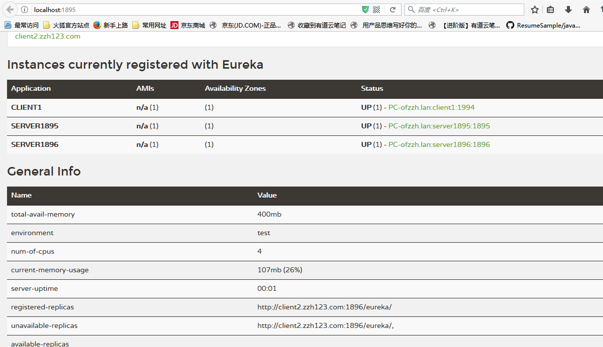

SpringBoot集成eureka可以很容易的实现服务的注册管理，这是SpringCloud很重要的功能。通过一个demo记录一下配置的方式。SpringBoot版本1.5.6.RELEASE，SpringCloud版本Dalston.SR3.
注册服务端
- 引入依赖
先创建一个SpringBoot项目，在IDEA中可以选中eureka-server依赖
1 | <dependencies> |
这是由IDEA在创建项目时自动生成的，目前还没有发现在项目建好之后自动添加依赖的方法。<dependencyManagement>标签里的内容是一个pom文件，用于SpringCloud的版本管理，里面记录了这个版本SpringCloud所包含的不同子模块版本，这样你就省去了在<dependency>里声明版本号，也不建议自己去设置版本号，因为<dependency>里的<version>优先级最高，如果引用了错误版本的依赖，可能会不兼容。
- 配置注册中心信息
在resources/application.yml中配置如下
1 | server: |
在启动类上加注解@EnableEurekaServer，然后启动，在浏览器访问http://localhost:1895即可进入注册中心的页面。
客户端
客户端的注册就更加简单了
- 新建一个SpringBoot项目，步骤与上一个相同，application.yml文件如下
1 | server: |
现在启动客户端的项目，就可以在http://localhost:1895下看到新注册的客户端了。
注册中心集群
为了防止注册中心意外挂掉，可以多设几个注册中心，让它们互相注册。我先按照网上的方法配置。
把刚刚的注册中心服务停掉，修改一下配置文件：1
2
3
4
5
6
7
8
9
10
11
12
13
14
15
16
17
18
19
20
21
22
23
24
25
26
27
28
29
30
31
32
33spring:
profiles:
active: server1
server:
port: 1895
eureka:
instance:
hostname: server1.zzh123.com
client:
register-with-eureka: false
fetch-registry: false
service-url:
defaultZone: http://server2.zzh123.com:1896/eureka/
spring:
profiles: server1
application:
name: server1895
server:
port: 1896
eureka:
instance:
hostname: server2.zzh123.com
client:
register-with-eureka: false
fetch-registry: false
service-url:
defaultZone: http://server1.zzh123.com:1895/eureka/
spring:
profiles: server2
application:
name: server1896
在host里这样配置
127.0.0.1 server1.zzh123.com
127.0.0.1 server2.zzh123.com
注意刚刚的客户端也要修改一下配置文件：1
2
3
4eureka:
client:
service-url:
defaultZone: http://server2.zzh123.com:1896/eureka/,http://server1.zzh123.com:1895/eureka/
在项目根目录下执行mvn clean package，如果使用IDEA，直接在右侧MAVEN选项那里点击clean和package按钮也可。使用命令行，进入target文件夹，启动项目：1
2java -jar demo-0.0.1-SNAPSHOT.jar --spring.profiles.active=server1
java -jar demo-0.0.1-SNAPSHOT.jar --spring.profiles.active=server2
然后访问localhost:1895/，localhost:1896/，看到下面的界面：
并没有出现注册节点…网上好多博客里都是这样设置的，可能是因为我的版本太新了吧。
然后我试着把register-with-eureka:和fetch-registry: 都改为true，允许注册自己和接收注册，重新打包访问：
- 1895节点
 - 1896节点
可以看到不仅客户端注册了，另一个注册中心注册了，连自己都注册了自己…而我们想达到的效果是除了自己之外注册，查了很久资料，都没有解决，暂时留个坑，期待工作中能解决吧。